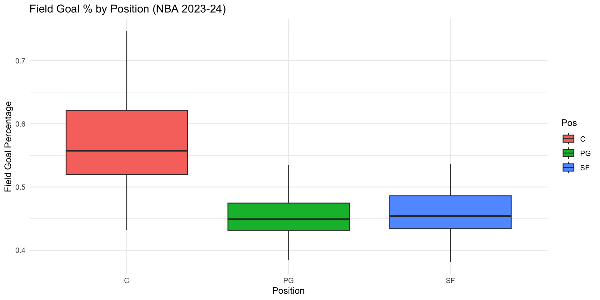
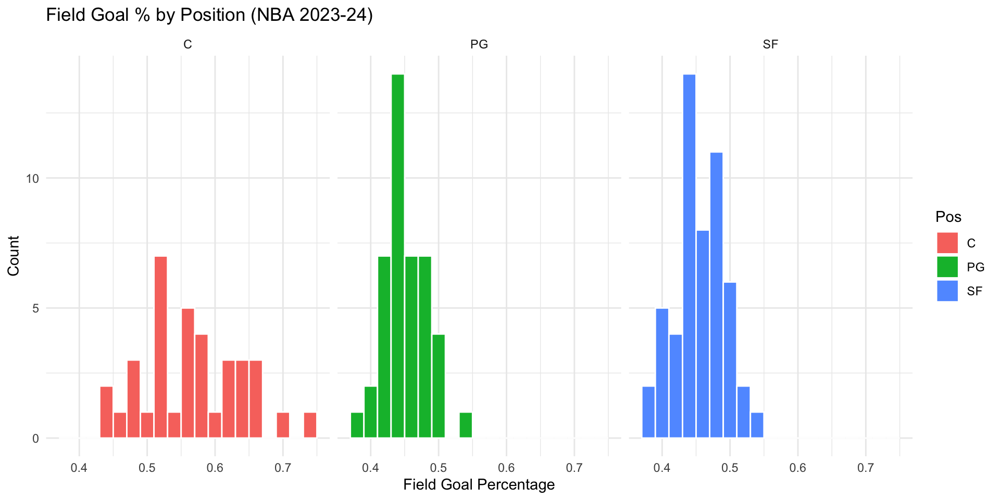
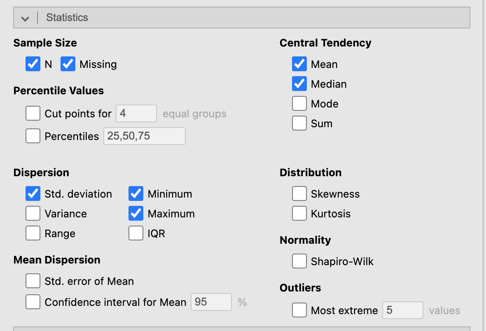
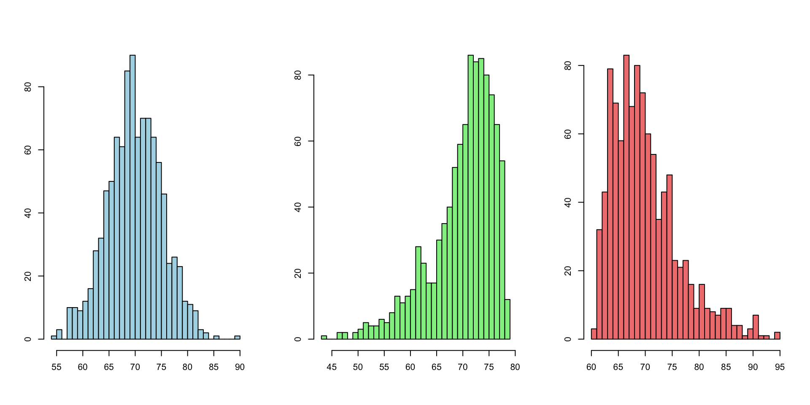
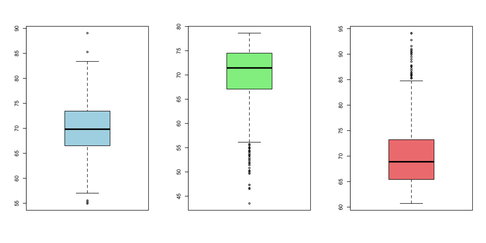
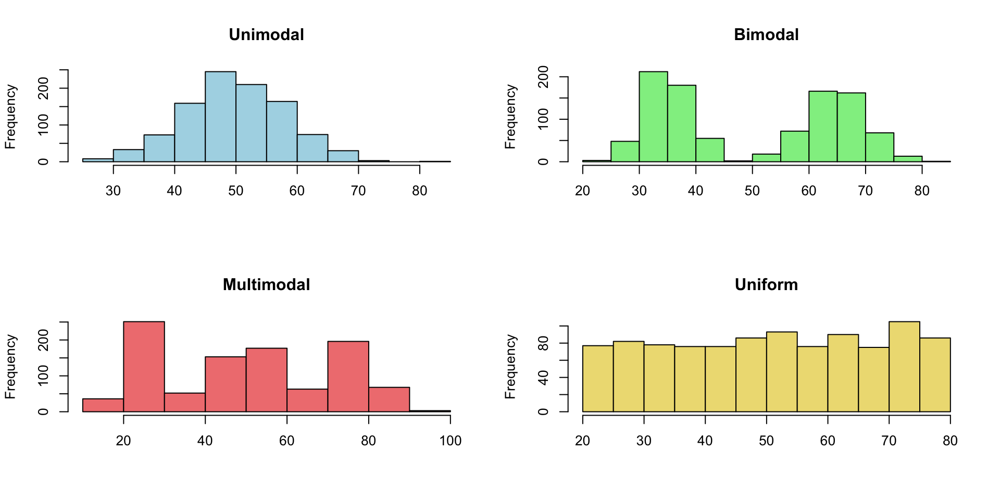
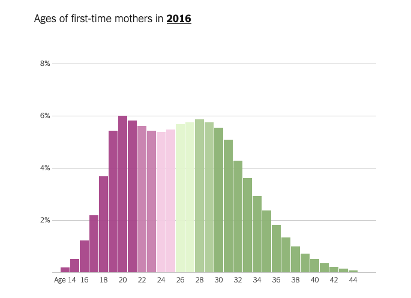
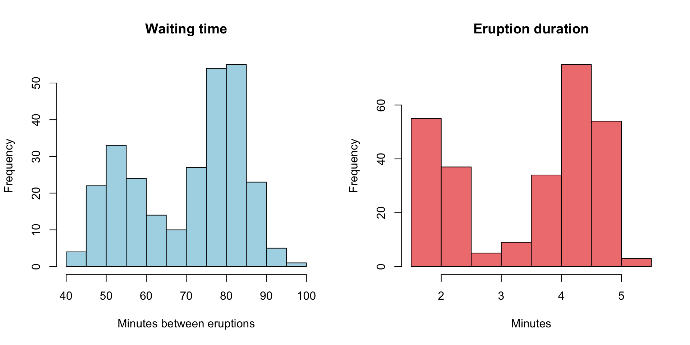

STAT117: Introduction to Statistics
In Chapter 2, we learned a few tools to examine univariate distributions. For any distribution, what properties are we looking at exactly?
library(Lock5Data)
library(tidyverse)
NBAPlayers2024 %>%
filter(FGAttempt > 50, Pos %in% c("C", "PG", "SF")) %>%
ggplot(aes(x = Pos, y = FGPct, fill = Pos)) +
geom_boxplot() +
labs(title = "Field Goal % by Position (NBA 2023-24)",
x = "Position",
y = "Field Goal Percentage") +
theme_minimal()
NBAPlayers2024 %>%
filter(FGAttempt > 50, Pos %in% c("C", "PG", "SF")) %>%
ggplot(aes(x = FGPct, fill = Pos)) +
geom_histogram(binwidth = 0.02, color = "white") +
facet_wrap(~ Pos, ncol = 3) +
labs(title = "Field Goal % by Position (NBA 2023-24)",
x = "Field Goal Percentage",
y = "Count") +
theme_minimal()

In addition to visualizations, we can use numeric summaries of data to describe a distribution.
A numeric summary of data is called a statistic, i.e., the sample mean is a statistic; the sample maximum is a statistic, etc.

Common statistics can be grouped by what they measure:
Example 1: How many hours did you sleep?
Mean:
Median:
Mode:
Example 2: type of recipe (1=Appetizer, 2=Main course, 3=Dessert, 4=Other). Can we calculate mean? Median? Mode?
Example 3: average preparation time (1=0 to 30 min, 2=30 min to 1 hour, 3=1 hour to 2 hours, 4 = 2 hours and above). Can we calculate mean? Median? Mode?
Recall, Likert scale variables are treated like numeric variables and people frequently calculate the mean for Likert scale variables.
How many hours did you sleep? Sleep hours is a continuous variable, so mean, median, and mode can all be calculated.
As an example, let’s say the data is 7, 8, 6, 5, 7, 9, 7. The mean is (7+8+6+5+7+9+7)/7 = 49/7 = 7 hours. The median is the middle value when sorted: 5, 6, 7, 7, 7, 8, 9 → median = 7 hours. The mode is the most frequent value: mode = 7 hours.
Type of recipe (1=Appetizer, 2=Main course, 3=Dessert, 4=Other) is a nominal variable — the numeric codes are arbitrary labels with no order. Only the mode (the most common category) is meaningful; mean and median should not be calculated.
Average preparation time (1=0-30 min, …, 4=2+ hours) is an ordinal variable — the categories are ordered, so median and mode are meaningful, but the mean should generally be avoided.
Likert scale items are technically ordinal, but by common (if debated) convention they are often treated as scale/continuous variables, and the mean is frequently reported.Example: (NELS dataset) provide interpretations for some of the statistics in the table below. Pay attention to what statistics should not be interpretated.
famsize:NULLregion: Northeast North Central South West
1 2 3 4 hwkin12: None Less than 1 Hour 1-3 Hours 4-6 Hours
0 1 2 3
7-9 Hours 10-12 Hours 13-15 Hours 16-20 Hours
4 5 6 7
Over 20 Hours
8
DESCRIPTIVES
Descriptives
───────────────────────────────────────────
famsize region hwkin12
───────────────────────────────────────────
N 500 500 497
Missing 0 0 3
Mean 4.69 2.46 3.43
Median 4.00 2.00 3.00
Mode 4.00 2.00 2.00
─────────────────────────────────────────── library(haven)
library(jmv)
library(tidyverse)
mydata <- read_sav("../../../../dataset/NELS.sav")
cat("famsize:\n")
attr(mydata$famsize, "labels")
cat("region:\n")
attr(mydata$region, "labels")
cat("hwkin12:\n")
attr(mydata$hwkin12, "labels")
options(digits = 3)
mydata |>
mutate(across(c(region, hwkin12), haven::zap_labels)) |>
jmv::descriptives(
vars = c("famsize", "region", "hwkin12"),
mode = T,
sd = F,
min = F,
max = F
)Statistics)
Famsize (number of people in the family) is a continuous variable, so both the mean (4.69) and median (4.00) are meaningful: a typical family in the sample has about 4 to 4.7 members.
Region (1=Northeast, 2=North Central, 3=South, 4=West) is a nominal variable — the numeric codes are arbitrary labels. The mean (2.46) and median (2.00) should not be interpreted; only the mode (the most common region) would be meaningful. In this case, the most common region is 2 (North Central). Do not say that “most people” are in the North Central region, which implies more than 50% of the data are in the North Central region and is not necessarily true.
Hwkin12 (weekly homework hours, coded 0=None up to 8=Over 20 hours) is an ordinal variable. The median (3.00, corresponding to the “4-6 hours” category) is the appropriate measure of a typical value: (at least) 50% of students in the data spend between 4 and 6 hours per week or less on homework and (at least) 50% spend between 4 and 6 hours per week or more. The mean (3.43) should not be used. The mode can be interpreted as the most common category, which is 2 (“1-3 hours”).Example 1: The following two classes both have an average of 77. Are their performances similar? How would you characterize their differences?
class1 <- c(35, 61, 62, 68, 80, 82, 92, 95, 95, 99)
class2 <- c(70, 70, 72, 75, 76, 77, 79, 81, 82, 88)
cat("Class 1 values:", class1, "\n")
cat("Mean:", mean(class1),
"SD:", sd(class1),
"Variance:", var(class1),
"IQR:", IQR(class1), "\n")
cat("Class 2 values:", class2, "\n")
cat("Mean:", mean(class2),
"SD:", sd(class2),
"Variance:", var(class2),
"IQR:", IQR(class2), "\n")Class 1 values: 35 61 62 68 80 82 92 95 95 99 Mean: 76.9 SD: 20.3 Variance: 413 IQR: 30.8 Class 2 values: 70 70 72 75 76 77 79 81 82 88 Mean: 77 SD: 5.72 Variance: 32.7 IQR: 7.75 standard deviation measures the average distance of each data point from the mean (variance is the square of the standard deviation)
interquartile range (IQR) measures the range within which the middle 50% of the data lie; range measures the difference between the maximum and minimum values
Example 2: San Francisco and Washington D.C. has the same annual average temperature of 14.6C/58.2F, however, their temperature distributions throughout the year are quite different.
Example 3: Eruption predictions of the geysers at Yellowstone National Park; the Old faithful geyser is famously predictable due to consistent historical waiting times.
Although both classes average 77, Class 1 has SD = 20.32 (variance = 412.99, IQR = 30.75, range = 64) while Class 2 has SD = 5.72 (variance = 32.67, IQR = 7.75, range = 18). Class 1’s scores are far more spread out — some students scored very low (35) and some very high (99) — while Class 2’s scores are tightly clustered around 77. So despite the identical average, the two classes performed very differently: Class 1 is much less consistent, or more homogeneous, than Class 2. We can say that Class 2 has more variation, is more diverse, or is more heterogeneous, than Class 1.
San Francisco and Washington D.C. share the same annual average temperature, but San Francisco’s temperature is far more consistent year-round (small SD), while D.C. has hot summers and cold winters (large SD) — the same mean can hide very different spreads.
Old Faithful’s waiting times between eruptions have a small SD/consistent pattern, which is exactly why predictions of the next eruption are reliable.A thorough statistical interpretation should include:
name(s) of relevant statistic(s);
values(s) of relevant statistics;
an interpretation in context;
a description of who/what the conclusion is valid for;
if applicable, a note on any other supporting or contradictory statistics.
Example: (NELS dataset) what’s a typical math achievement score? Also, as a review, explain how the range and IQR values are calculated.
DESCRIPTIVES
Descriptives
──────────────────────────────────
achmat08
──────────────────────────────────
N 500
Missing 0
Mean 56.59
Median 56.18
Mode 77.20
Standard deviation 9.340
IQR 14.31
Range 40.59
Minimum 36.61
Maximum 77.20
25th percentile 49.43
50th percentile 56.18
75th percentile 63.74
────────────────────────────────── For students in the NELS dataset, a typical math achievement score is about 56 (median=56.18, mean=56.59).
Range = maximum − minimum = 77.20 − 36.61 = 40.59. IQR = 75th percentile − 25th percentile = 63.74 − 49.43 = 14.31. The IQR is much smaller than the range because it excludes the most extreme 25% of scores on each end, so it is less affected by any unusually high or low scorers.Example: suppose these are histograms of exam grades for three classes. How are the three classes different?
set.seed(1)
n <- 1000
symmetric <- rnorm(n, mean = 70, sd = 5)
left_skewed <- rbeta(n, shape1 = 20, shape2 = 2) * 100
left_skewed <- left_skewed - mean(left_skewed) + 70
right_skewed <- rbeta(n, shape1 = 2, shape2 = 20) * 100
right_skewed <- right_skewed - mean(right_skewed) + 70
par(mfrow = c(1, 3))
hist(symmetric, col = "lightblue", breaks = 30, main=NA, xlab=NA, ylab=NA)
hist(left_skewed, col = "lightgreen", breaks = 30, main=NA, xlab=NA, ylab=NA)
hist(right_skewed, col = "lightcoral", breaks = 30, main=NA, xlab=NA, ylab=NA)
Symmetric
Tail values
Left skewed or negative skewed
Right skewed or positive skewed
Symmetric: the left and right halves of the distribution mirror each other; mean ≈ median.
Tail values: the thinner, more spread-out side of a distribution; they represent low frequency, extreme values.
Left skewed (negative skew): the tail is on the left (histogram in the middle)
Right skewed (positive skew): the tail is on the right (histogram on the right)We can similarly tell skewness from boxplots

Recall: extremely unusual values on the tail are called outliers. Outliers are very useful for deciding the skewness of the distribution.
For a symmetric distribution, the median line sits near the center of the box and the two whiskers are roughly equal in length. For a right-skewed distribution, the upper whisker is longer (and/or more outliers appear above the box). For a left-skewed distribution, the lower whisker is longer (and/or more outliers appear below the box).
If the outliers are small values (left tail), the distribution is left-skewed. If the outliers are large values (right tail), the distribution is right-skewed.Instead of histograms and boxplots, we can also use a statistic called the skewness ratio.
DESCRIPTIVES
Descriptives
───────────────────────────────────
achmat08
───────────────────────────────────
N 500
Missing 0
Mean 56.59
Median 56.18
Standard deviation 9.340
Minimum 36.61
Maximum 77.20
Skewness 0.1137
Std. error skewness 0.1092
─────────────────────────────────── Skewness under Statistics - Distribution)
Skewness ratio formula:
Direction of the skewness:
Severity of the skewness:
Skewness ratio formula: skewness ratio = skewness ÷ standard error of skewness.
Direction: a positive skewness value indicates right (positive) skew; a negative value indicates left (negative) skew.
Severity: as a rule of thumb, a skewness ratio with absolute value less than about 2 indicates a roughly symmetric distribution; a value greater than 2 indicates severe right skew and a value less than -2 indicates severe left skew. The larger the absolute value, the more skewed the distribution.
Forachmat08: skewness = 0.114, SE of skewness = 0.109, so the skewness ratio ≈ 0.114 / 0.109 ≈ 1.04. Since |1.04| < 2, achmat08 is considered roughly symmetric (only very slightly right skewed).
Use the appropriate statistic to describe properties of a distribution
| Level of measurement of the variable | Location (average/typical value, central tendency) |
Spread (variability, consistency, dispersion) |
Shape (symmetric or skewed; outliers, modality) |
|---|---|---|---|
| NOMINAL | mode | ||
| ORDINAL | median | IQR | |
| SCALE | median (mean) | IQR | skewness ratio |
Using a histogram, we can see how many “bumps” or “modes” the distribution has.

set.seed(1)
n <- 1000
unimodal <- rnorm(n, mean = 50, sd = 8)
bimodal <- c(rnorm(n / 2, mean = 35, sd = 4),
rnorm(n / 2, mean = 65, sd = 5))
multimodal <- c(rnorm(n / 3, mean = 25, sd = 4),
rnorm(n / 3, mean = 50, sd = 5),
rnorm(n / 3, mean = 75, sd = 6))
uniform <- runif(n, min = 20, max = 80)
par(mfrow = c(2, 2))
hist(unimodal, main = "Unimodal", col = "lightblue", xlab = NA)
hist(bimodal, main = "Bimodal", col = "lightgreen", xlab = NA)
hist(multimodal, main = "Multimodal", col = "lightcoral", xlab = NA)
hist(uniform, main = "Uniform", col = "lightgoldenrod", xlab = NA)Example 1: At what age do women first become mothers?

The age distribution of women at the time of their first childbirth in 2016 shows a bimodal pattern, with peaks around the early 20s and early 30s. It signals two clusters: two groups of women who are very different in terms of age at first childbirth. The article notes that this is highly correlated with location (i.e., urban vs. rural). For bimodal distributions like this, statistics like the mean or median can be insufficient and even misleading (e.g., we should not simply conclude that “women are giving birth at around 26 years old on average” - the median/average value likely falls between the two peaks and does not accurately represent either group of women).
Example 2: Old faithful Geyser

[1] 4These two histograms are generated using historical data of the Old Faithful Geyser at the Yellowstone National Park. Both are bimodal. The median waiting time is 76 minutes, and the median eruption duration is 4 minutes. These statistics alone do not accurately represent “typical” waiting times and eruption durations.
Recall, we can use outliers to determine the skewness of a distribution:
- Large outliers → right skewed
- Small outliers → left skewedSimple example: number of hours slept yesterday
Without outlier: 5, 6, 7, 7, 7, 8, 9
Median: 7
Mean: 7
IQR: 2
Range: 4
With outlier: 5, 6, 7, 7, 7, 8, 20
Median: 7 (not affected by the outlier of 20)
Mean: 8.57 (greatly affected by the outlier; we should not conclude that students “typically” sleep for 8.57 hours)
IQR: 2 (not affected by the outlier of 20)
Range: 15 (greatly affected by the outlier)
General pattern:
Symmetric distribution: mean ≈ median
Right (or positive) skewed: mean >> median
Left (or negative) skewed: mean << median
When you look for a “typical” value of a numeric variable, should you use mean or median? Median is “safer” to use because it is more robust to outliers and extreme skewness.
Mean is much higher than the median for rental prices in Manhattan; the article draws its main conclusion using the median, as it should.
In general, median wage is lower than the mean wage across occupations; the median is a better representation of a “typical” wage.
Many Multi-level marketing (MLM) companies quote the average earning to present a deceptive picture of typical participant earnings; the median is a more accurate representation.